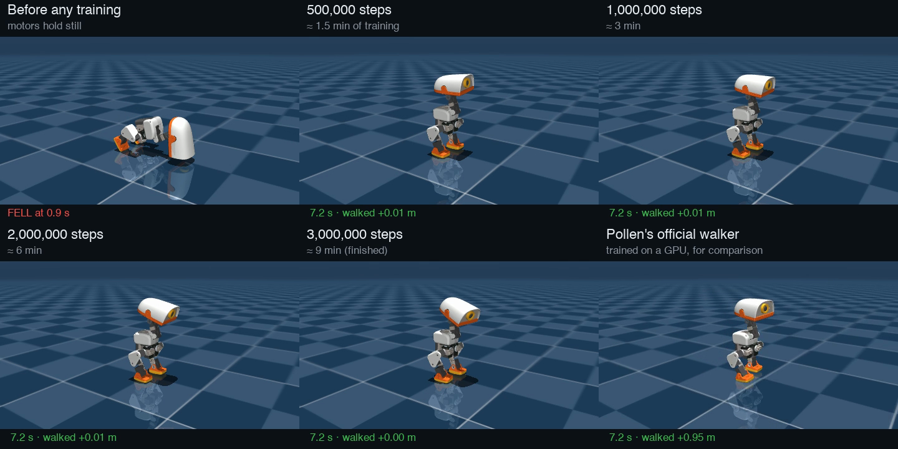
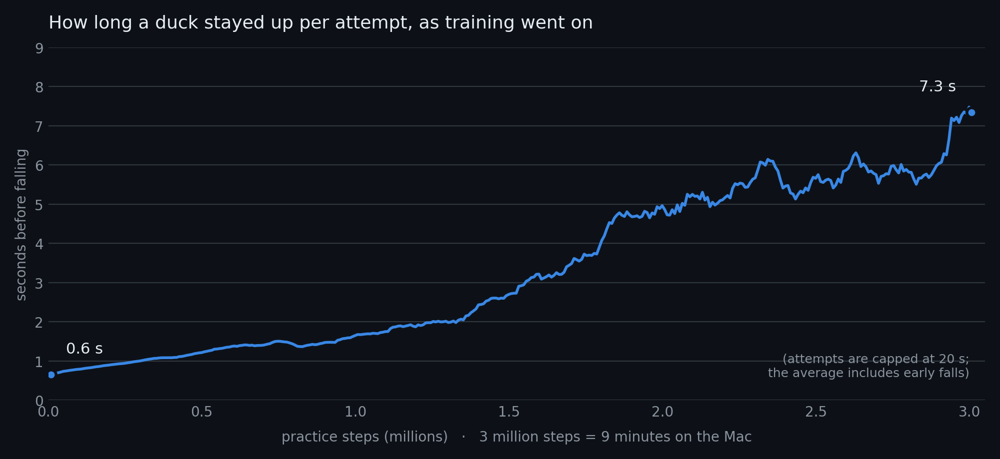
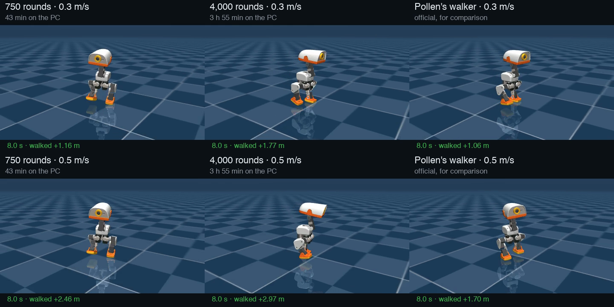
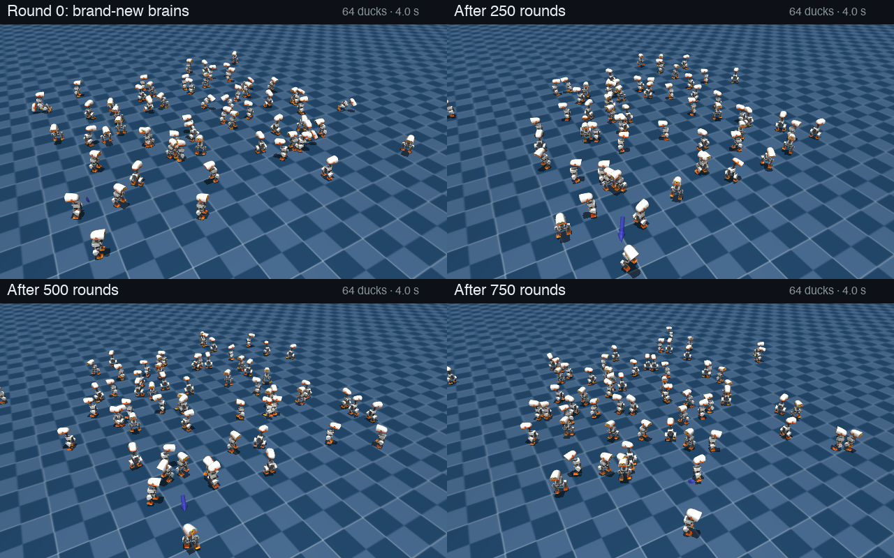
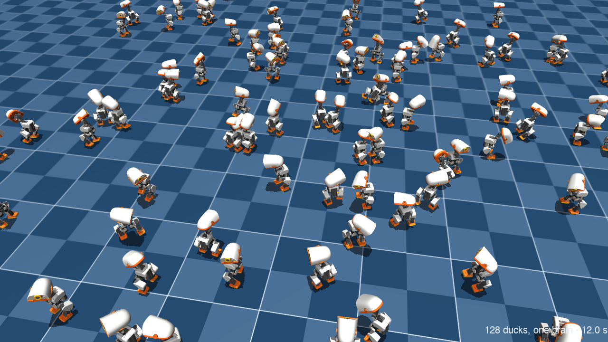
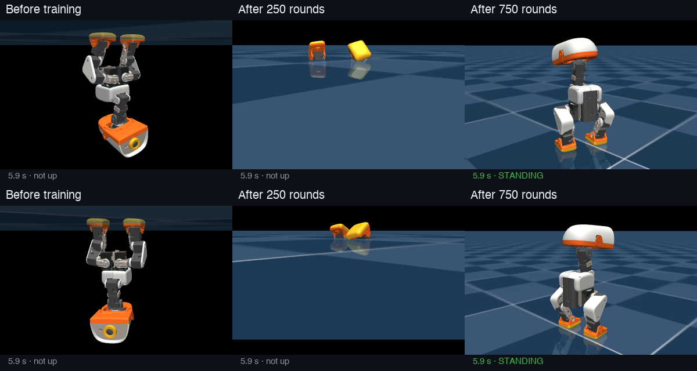
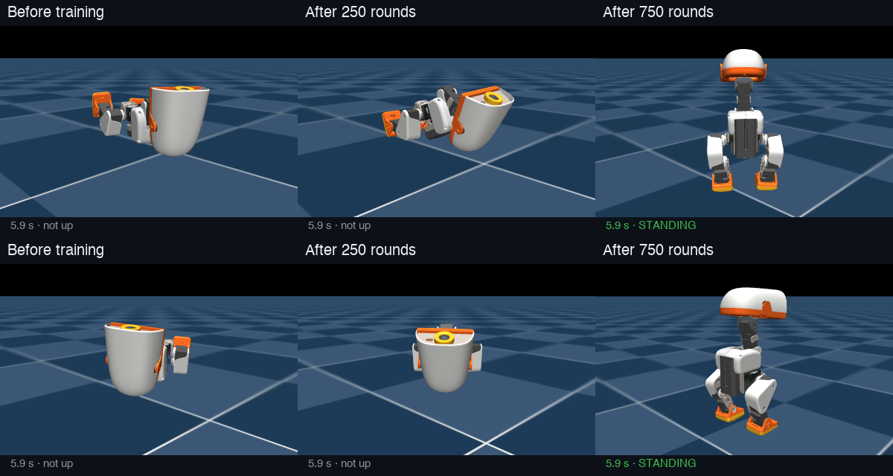

How a robot duck learns to walk
What "I ran the lab's starter training, 3 million practice steps, 9 minutes" actually means. Written 2026-11-03 from my own first training run on my MacBook Pro. Every number here was measured from that run's logs, not taken from a brochure.
The short version (the one to tell people)
Nobody programs the duck to walk. Its "brain" is a few hundred thousand numbers that start out random. A simulator lets 32 virtual ducks practise at once, much faster than real time, and every fiftieth of a second each duck gets a score: points for staying upright and doing what it was asked, deductions for flailing. After each short burst of practice, the computer nudges the numbers towards whatever scored better than expected. Repeat a few hundred times and behaviour appears that nobody wrote.
My first run: 9 minutes on a laptop = 16.7 hours of duck practice, about 29,000 attempts. At the start a duck fell over within 0.6 seconds. By the end it stayed up for the whole test.
The twist: it learned to stand very well, not to walk. Standing still turned out to be the easiest way to score points. Getting the score right is the real craft.
1. The duck's brain is a "policy"
| What it is | A small neural network: a function that takes numbers in and gives numbers out |
| How often it runs | 50 times a second |
| Numbers in (61) | how the trunk is rotating and tilting, where each of the 14 joints is and how fast it's moving, what it did last time, and the command: how fast to walk, turn, and where to point the head |
| Numbers out (14) | a target angle for each of the 14 motors |
| Size | 61 → 512 → 256 → 128 → 14: four layers, 197,896 numbers ("weights"), a 775 KB file (policy.onnx) |
The network's shape is fixed. Training only changes those 197,896 numbers. Before training they're random, so the duck twitches and collapses. After training, the same arithmetic happens to produce balance.
An analogy for Swift people: it's a pure function (SensorReading) -> MotorTargets with 198,000
magic constants, and training is a search for good constants.
2. What a "step" is
One step = 1/50th of a second of duck life. Each step:
- The simulator reports where the duck's body and joints are.
- The brain turns that into 14 motor targets.
- The physics engine (MuJoCo) moves the world forward 0.02 seconds: motors push, gravity pulls, feet hit the floor.
- The duck gets a score for that moment (section 4).
The simulated motors are realistic, not idealised: they respond with delay, limited strength and friction, modelled from measurements of the real Dynamixel servos (Pollen's "BAM" motor models).
3. What "3 million steps in 9 minutes" adds up to
My run (first-gait) |
|
|---|---|
| Total steps | 3,006,464 |
| Duck time that represents | 3,006,464 × 0.02 s = 60,129 s = 16.7 hours |
| Wall-clock time | 522 s = 8.7 minutes |
| Speed-up | ≈ 115 × faster than real time |
| Ducks practising at once | 32 (each one lived about 31 minutes) |
| Attempts | ≈ 29,000. An attempt ends when the duck falls, or after 20 seconds |
| Learning rounds | 367 (section 5) |
| Computer | MacBook Pro, CPU only. No NVIDIA graphics card |
Why so fast? There are no graphics: the ducks aren't drawn while they practise, only calculated. And 32 of them run side by side on the Mac's processor cores.
For scale, Pollen's official walker was trained on an NVIDIA GPU with 4,096 ducks at once. A typical run is several hundred to a few thousand learning rounds of 4,096 ducks × 24 steps each: roughly 75 to 400 million steps, 25 to 130 times my 3 million.
4. How it knows what "good" is: the reward
Every step, each duck earns points from eight rules (the reward terms). These are the exact rules my run used:
| Rule | What earns points | Start of training | End |
|---|---|---|---|
track_lin_vel |
moving at the commanded speed and direction | 20 | 420 |
track_ang_vel |
turning at the commanded rate (and not wobbling) | 0.8 | 117 |
upright |
trunk level, not tipping | 21 | 690 |
pose |
joints near a natural standing posture | 11 | 294 |
head_pose |
head where it was told to look | 48 | 608 |
feet_air_time |
each foot spending 0.125–0.3 s in the air: real steps, not shuffles | 10 | 14 |
action_rate_penalty |
deduction for jerky changes between one step and the next | −83 | −1,061 |
ang_vel_xy_penalty |
deduction for rocking side to side or front to back | −18 | −20 |
| Total per attempt (average) | 10 | 885 |
(The numbers are each rule's points added up over a whole attempt, averaged across attempts at that point in training. They grow partly because attempts get longer: more time alive means more steps to earn points in.)
A few things worth noticing:
- Most of the rules use partial credit. Being close to the commanded speed still pays something,
so a duck standing still while asked to walk slowly still collects some
track_lin_velpoints. feet_air_timebarely moved, from 10 to 14. The ducks hardly ever lifted a foot. That's the clue for section 8.- Falling has no explicit penalty. Falling ends the attempt, and a duck on the floor collects nothing more, so staying up is worth every point you'd have earned afterwards.
5. The learning loop (PPO)
The algorithm is PPO, Proximal Policy Optimization (OpenAI, 2017). It's the standard choice for robot locomotion. One learning round:
- Practise. All 32 ducks run for 256 steps (about 5 seconds each): 8,192 moments of experience. The brain adds a little random wiggle to its outputs so it tries variations. Without that wiggle it could never discover anything new.
- Judge. A second network, the critic, has been learning to predict "from this situation, how many points do I usually get from here on?" For each moment, compare what actually happened with the critic's prediction. Better than expected means that action was a good idea; worse means it wasn't. That difference is called the advantage.
- Nudge. Adjust the 197,896 numbers so good-idea actions become a bit more likely and bad ones a bit less. Only a bit: PPO caps how far one round can move the brain ("proximal" = stay close). Big jumps tend to wreck what it has already learned. It goes over the 8,192 moments 5 times, in batches.
- Repeat. My run did this 367 times.
As training goes on, the random wiggle shrinks: the brain gets more confident and explores less.
6. Watch it learn
The same duck brain at five moments in my training run, plus Pollen's official walker for comparison. Every tile gets the same instruction: walk forward at 0.3 m/s. Each clip is 8 seconds, and the caption at the bottom says how far the duck has moved.

(video file, if the player above doesn't show)
| Stage | What happens |
|---|---|
| Before any training (motors just hold still) | collapses at 0.9 s |
| 500,000 steps (≈ 1.5 min of training) | stays up the full 8 s, moves 1 cm |
| 1,000,000 steps (≈ 3 min) | stays up, 1 cm |
| 2,000,000 steps (≈ 6 min) | stays up, 1 cm |
| 3,000,000 steps (≈ 9 min, finished) | stays up, 0 cm |
| Pollen's official walker | stays up, walks 95 cm |
And the learning curve from the run's own log: how long a duck lasted per attempt as training went on.

The jump around 1.8 million steps is the brain "getting" balance. During training the attempts are harder than in the clips: random pushes, random commands, sensor noise (section 9). That's why the average stays below the 20-second cap even though the test clips never fall.
7. How I know it stands rather than walks
- The lab's test battery (
eval-walk) said 0 falls in 20 attempts, which sounds great. - It also said speed tracking was off by 0.23 m/s on average. That's roughly the size of the commands themselves, which means "basically ignoring them".
- So I measured directly: asked for 0.15, 0.3 and 0.5 m/s, the trained duck moved 0.00 m every time. Pollen's walker, through the same test, moved 1.06 m at 0.3 and 1.70 m at 0.5.
Lesson I'm keeping: watch or measure the behaviour, don't trust a single score.
8. Why it learned to stand: the most important idea in all of this
The duck did exactly what the score rewarded. It just found a strategy I didn't intend:
- Standing pays reliably.
upright,poseandhead_posepay every step a duck is level and still. Those three added up to ~1,600 points at the end. - Walking is risky. Lifting a foot risks a fall, and a fall forfeits every future point.
- Moving costs.
action_rate_penaltydeducts for jerky movement. At the end it was the single largest term, at −1,061. Standing still is the cheapest way to keep that small. - Partial credit. Standing still while asked to walk slowly still earns some speed-tracking points.
So "stand perfectly and ignore the speed command" is a local optimum: a solution that's good enough, where any small change (taking a wobbly first step) scores worse before it would score better. With limited practice, PPO's small careful nudges don't get it over that hump.
This has a name, reward hacking (or "specification gaming"): the learner satisfies the letter of the reward and not its spirit. It's the central skill of this field. The algorithm is off the shelf. The craft is designing a score that makes the behaviour you want the easiest way to win. That's what the Microduck lets me practise.
The usual levers, which I can now try:
- More practice: the official walker saw 25–130× more.
- Pay for stepping more, or penalise jerkiness less early on. The lab already eases in the jerkiness penalty in stages for this reason.
- A curriculum: teach standing first, then slow walking, then faster.
9. Getting from simulation to the real duck
A brain trained in a perfect simulator often fails on a real robot: the sim-to-real gap. Two defences, both switched on in my run:
- Realistic motors. BAM models of the real servos, so the simulated motors are as weak, slow and sticky as the real ones.
- Domain randomisation. Every attempt varies the duck's mass (±5%), the motor friction and the motor delay, adds sensor noise, and shoves the duck (a push of up to 0.3 m/s every 3–6 seconds). A brain that copes with all of those variations is more likely to cope with the one real duck.
The finished brain is exported as an ONNX file. The real duck runs that exact file 50 times a second.
In the simulator on my Mac, the same file goes into the real duck software (scripts/duck-sim).
10. Ways to explain it to someone
- "Warmer, colder." Like training a dog, if you could only say "good" or "bad" fifty times a second, and the dog had 29,000 tries.
- A video game high score. The duck is a player who knows nothing except that some moves raise the score. It plays 16 hours of "don't fall over" in 9 minutes.
- A toddler, minus the bruises. Practice in a virtual world where falling costs nothing, then bring the skill into the real one.
- The genie problem. You get exactly what you ask for. Ask for "upright and calm" and you get a duck that won't move.
11. What to try next
- A longer run. The same command with more steps, e.g.
--steps 20_000_000(roughly an hour on this Mac). Does it start walking? I don't know yet, and that's the experiment. - Watch training live. microduck-lab has a browser viewer with a "teach" panel. It shows ducks
improving every ~15 seconds as new snapshots load, with sliders for the reward terms:
uv run duck-lab runs/first-gait, thennpm run devin~/microduck-lab/duck-viewer. Not tried yet. - Film any run the way I made the video above (script kept in this repo's notes; ask Claude).
12. Update, same evening: Pollen's real training on my gaming PC, and it walks
On 2026-11-03 I set up the gaming PC (see MACHINES.md) and ran Pollen's own training
(microduck_rl, the one that needs an NVIDIA graphics card) for 750 learning rounds. Everything was
done from the laptop while the PC sat at its login screen.
What that was:
- 4,096 ducks at once on the RTX 3060, instead of 32 on the Mac's processor.
- 750 rounds × 4,096 ducks × 24 steps ≈ 74 million steps, about 410 hours (17 days) of duck practice, in 43 minutes 28 seconds: ~3.4 s per round, ~800× real time.
- Pollen's full reward (more than 20 terms, including foot slip and foot clearance) and their curriculum, which makes the job harder as the duck gets better.
How long the ducks stayed up (an attempt ends at a fall or after 20 s):
| Round | Average time before falling |
|---|---|
| 1 | 0.5 s |
| 50 | 2.7 s |
| 150 | 17.3 s |
| 750 | 19.2 s, almost never falls |
Does it walk? Measured the same way as section 7, in microduck-lab's simulator (not the one it trained in, which makes the test tougher), told to walk forward for 8 seconds:
| Speed asked for | My PC duck (750 rounds) | Pollen's alpha_walking | My Mac duck (first-gait) |
|---|---|---|---|
| 0.15 m/s (1.2 m in 8 s) | 0.78 m | 0.01 m | 0.00 m |
| 0.30 m/s (2.4 m in 8 s) | 1.16 m | 1.06 m | 0.00 m |
| 0.50 m/s (4.0 m in 8 s) | 2.46 m | 1.70 m | 0.00 m |
It walks, at every speed, without falling, and goes further than Pollen's own walker in this test. It's still slower than asked (2.46 m where a perfect duck would cover 4.0 m), which is what more rounds are for. Two honest caveats:
- This is one test in one simulator, not the real robot. Pollen's walker was built for the real robot, with things my 750-round duck hasn't been tested on.
- "Further" isn't automatically "better". Next comes watching it, then the full duck simulator
(
scripts/duck-sim), where it would run on the real duck software.
Why the PC duck walks when the Mac duck only stood: Pollen's reward and curriculum are tuned to make standing still a losing strategy, plus 130× more ducks practising. Section 8 in action.
The brain itself is policies/pc-first-750.onnx (794 KB). It has the same shape
as Pollen's: 61 numbers in, 14 motor commands out. Checkpoints (rounds 0, 250, 500, 749) are on the laptop in
~/microduck-runs/pc/, and on the PC in ~/microduck_rl/logs/rsl_rl/. Training to 4,000 rounds continues from
round 749; it doesn't start over.
13. Report card, 2026-11-04: the overnight runs
Three checks on what trained overnight. Every number below was measured, not read off a training log.
Walking: 750 rounds against 4,000 rounds

Video: media/walk-750-vs-4000.mp4 (8 s, top row 0.3 m/s, bottom row 0.5 m/s).
Test 1, microduck-lab's simulator (8 s, told to walk straight ahead):
| Speed asked for | Duck | Forward | Sideways | Facing at the end |
|---|---|---|---|---|
| 0.3 m/s (ideal 2.4 m) | 750 rounds | 1.16 m | −1.24 m | turned 72° |
| 4,000 rounds | 1.77 m | 0.08 m | 1° | |
| Pollen's walker | 1.06 m | 0.00 m | 5° | |
| 0.5 m/s (ideal 4.0 m) | 750 rounds | 2.46 m | −2.01 m | turned 67° |
| 4,000 rounds | 2.97 m | 0.17 m | 19° | |
| Pollen's walker | 1.70 m | −0.63 m | 28° |
- The big improvement is walking straight. The 750-round duck walks fast but curves right: about 70° off course and 2 m sideways in 8 s. That was hidden before, because the first test only measured forward distance.
- The 4,000-round duck holds its line and covers more ground than either of the others.
Test 2, the full duck simulator (scripts/duck-sim: the real robotd, the same 50 Hz loop as the robot).
The walking brain was swapped for one run, and the log confirmed which file was loaded. Ground covered in about 8 s
of drive:
| Speed asked for | 4,000 rounds | Pollen's walker |
|---|---|---|
| 0.3 m/s | 1.38 m | 0.94 m |
| 0.5 m/s | 2.68 m | 1.55 m |
- It works in the real daemon stack. Pollen's sit-to-stand brain got it up, then my brain took over, stood and walked, with nothing falling over or complaining.
- This doesn't make mine "better" than Pollen's. Theirs (version 8) has also been trained to steer, turn on the spot, tilt its body on command and get up gracefully from a fall, and it may simply be tuned to walk slower. Mine has only learnt the basic task. Those extra skills are what a later, longer run has to add before mine could replace theirs.
Many ducks at once: what "4,096 ducks in parallel" looks like

Video: media/crowd-walk.mp4 (8 s, 2×2). It uses the Studio's 750-round walking run (Metal,
whose walking physics is fine) and shows 64 of the ducks, each with the brain saved at that stage.
- Every duck is asked for something different: its own random speed and direction, its own random start. That's why they spread out unevenly. Real training runs 4,096 like this at once, and every round they all share one brain, which learns from all of their attempts together.
- A duck that falls is reset on the spot, as in training, so the early stages show a lot of jumping back to the start.
- Made with
tools/report-card/crowd_film.pyon the Studio. Any task or checkpoint works:CROWD=64 SECONDS=8 uv run python crowd_film.py <task> <run dir> out.mp4 "model_0.pt=Caption" ...
Fly-over version: media/fly-walk.mp4, 24 s, 128 ducks all running the 4,000-round walking
brain. The camera starts high above the crowd and slowly circles down until it's among them, 1 m from one duck.
Script: tools/report-card/fly_film.py, about 12 min on the Studio's CPU.

Stand-up (trained on the Studio's Apple GPU)

Video: media/standup-750-metal.mp4. These are the first two deep-sitting ducks of a
fixed set, not picked for looking good.
Test: 64 ducks start sitting, and each gets 6 s. "Up" means trunk higher than 10.5 cm (standing is 11.5 cm).
| Brain | All 64 | From a deep sit | From half up | From nearly standing |
|---|---|---|---|---|
| Before training | 0% | |||
| 250 rounds | 62% | 11 of 29 | 6 of 12 | 23 of 23 |
| 500 rounds | 78% | 14 of 25 | 9 of 12 | 27 of 27 |
| 750 rounds | 72% | 12 of 22 | 8 of 16 | 26 of 26 |
⚠️ Don't trust this brain: the Mac's world had a bug. In the frames, the ducks that failed had sunk through the floor. I checked which body parts can touch the floor:
- Pollen's original: 10 parts (trunk, hips, legs, jaw, feet).
- The Metal version: only the two feet.
So my Studio duck practised getting up in a world where its bottom falls through the ground, which is useless for the real duck. Walking isn't affected: in both versions only the feet touch the floor in the walking task, so the Studio walking result (METAL.md) stands.
The cause is in the newer mjlab that the Metal branch moved to (1.6, against Pollen's 1.3). It switches off floor contact for every body part that isn't named in the collision rule, and the stand-up model's body parts have no names. mjlab 1.3 only switched them off by name, so unnamed parts kept their contact by accident. Details and the note for David are in METAL.md. Pollen will hit the same thing when they upgrade mjlab.
Stand-up, retrained on the PC (Pollen's original, correct floor): it works
standup-750, 2026-11-04 10:21–11:12 (about 50 min, GPU capped at 130 W). Brain:
policies/pc-standup-750.onnx. Same test as above: 64 ducks start sitting and get
6 s each.
| Brain | All 64 | From a deep sit | From half up | From nearly standing |
|---|---|---|---|---|
| Before training | 0% (they lie on the floor now) | |||
| 250 rounds | 69% | 10 of 22 | 7 of 15 | 27 of 27 |
| 500 rounds | 100% | 25 of 25 | 20 of 20 | 19 of 19 |
| 750 rounds | 100% | 20 of 20 | 20 of 20 | 24 of 24 |

- Every duck gets up, from every starting position, by 500 rounds. The Mac-trained duck managed 72%, in a world where it could fall through the floor.
- Close-up video:
media/standup-750-pc.mp4. 64 ducks at four stages:media/crowd-standup.mp4. - Not yet tried: in the full duck simulator in place of Pollen's sit-to-stand brain. That needs checking first that
robotd's sit-to-stand slot expects this task's inputs.
Glossary
| Word | Meaning |
|---|---|
| Policy | The duck's brain: sensor numbers in, motor targets out |
| Weights | The numbers inside the policy that training adjusts |
| Step | One 1/50 s tick: look, decide, physics moves on |
| Episode / attempt | One try, from reset until falling or a 20 s timeout |
| Reward | The score per step; the only thing the duck "wants" |
| PPO | The learning algorithm: practise, judge, nudge a little, repeat |
| Critic | A helper network that predicts expected future points |
| Advantage | How much better or worse an action went than the critic predicted |
| Exploration | The random wiggle that lets the brain discover new moves |
| Local optimum | Good-enough strategy where small changes only make things worse |
| Reward hacking | Winning the score without doing what you meant |
| Domain randomisation | Varying the simulation so the brain copes with the real world |
| Sim-to-real gap | Simulation and reality differ; a brain must survive both |
| ONNX | The portable file format the brain is saved in (like a Core ML model) |
| MuJoCo | The physics engine that simulates the duck |
| BAM | Pollen's measured models of the real servo motors |